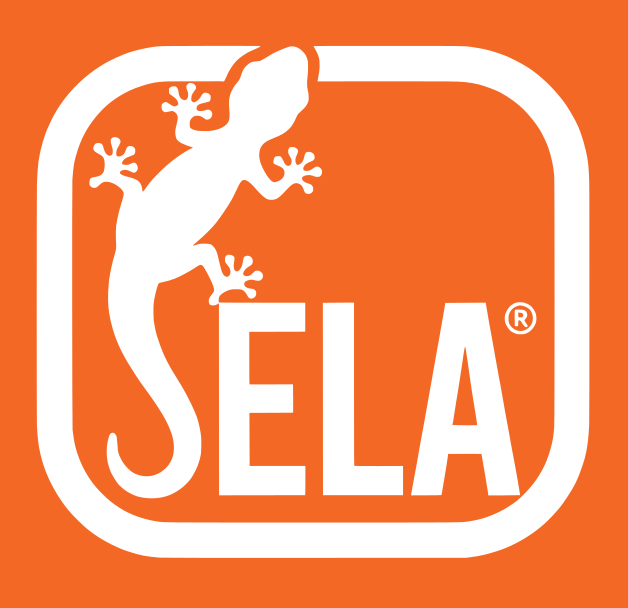

Gecko Grip
英文單字記憶 · V0.8.0
離線
安裝
—
📖 通用英文 (萬字)
🏥 醫學詞彙
今日任務
0
到期複習
0
新字
0
精通 Box5
LEITNER 記憶階梯 · 已學
0
字
開始練習
設定 · 進度備份
—
英文已遮蔽 — 憑記憶拼寫
🔊
· · · · ·
中文遮蔽中
✏️ 測試拼字 (T)
可選 — 開啟時英文會遮蔽，憑記憶拼寫
確認
顯示中文意思
Space
不認得
之後再考 · 1
認識
拉長間隔 · 2
Space
顯示中文
1
不認得
2
認識
P
發音
T
拼字
結束本回合
本回合完成
0
再來一回合
回到首頁
通用英文 · 學習範圍
詞頻起（1 = 最常用）
詞頻迄
建議 101–3000 起步（前 100 多為 the/of/and 等功能詞）。
每回合新字
複習上限
發音口音（備援語音）
美式 en-US
英式 en-GB
優先播放字典真人錄音；離線或查無時改用系統語音。
通用英文 · 新字詞性配比
配比方案
醫學論文／國際會議（動 45 ／名 35 ／形 20）
均衡（動 30 ／名 40 ／形 20 ／副 10）
依詞頻（不分詞性）
自訂…
詞頻表 rank 101–3000 實測
59% 名詞、19% 動詞
（Brown 語料庫統計）。照詞頻順序發新字＝六成在背名詞。配比模式依比例挑，同一桶內仍照詞頻由高到低。
動詞 %
名詞 %
形容詞 %
副詞 %
離線與安裝
—
詞庫、釋義、排程全部內嵌，
離線可完整練習
。
需要連線的只有兩項：字典真人錄音與英文定義（離線時自動改用系統語音，不影響中文釋義與評分）。
進度備份
匯出 JSON
匯入 JSON
進度存於瀏覽器 localStorage，零帳號、零 PII。換裝置請先匯出。
儲存並返回